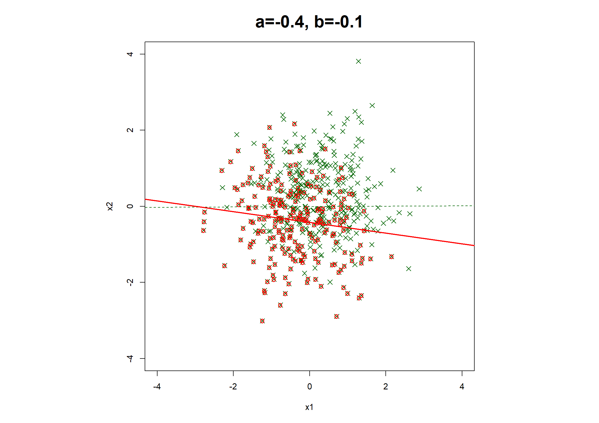
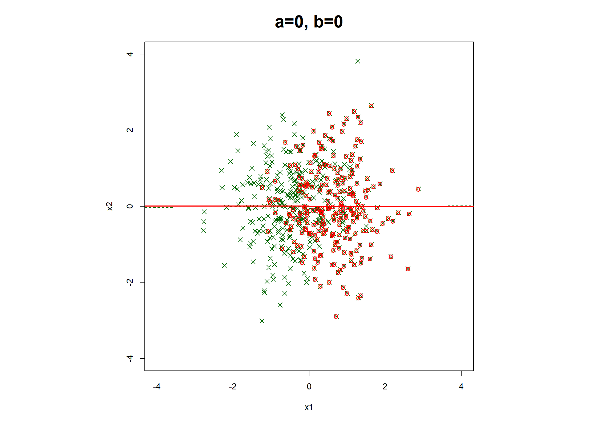
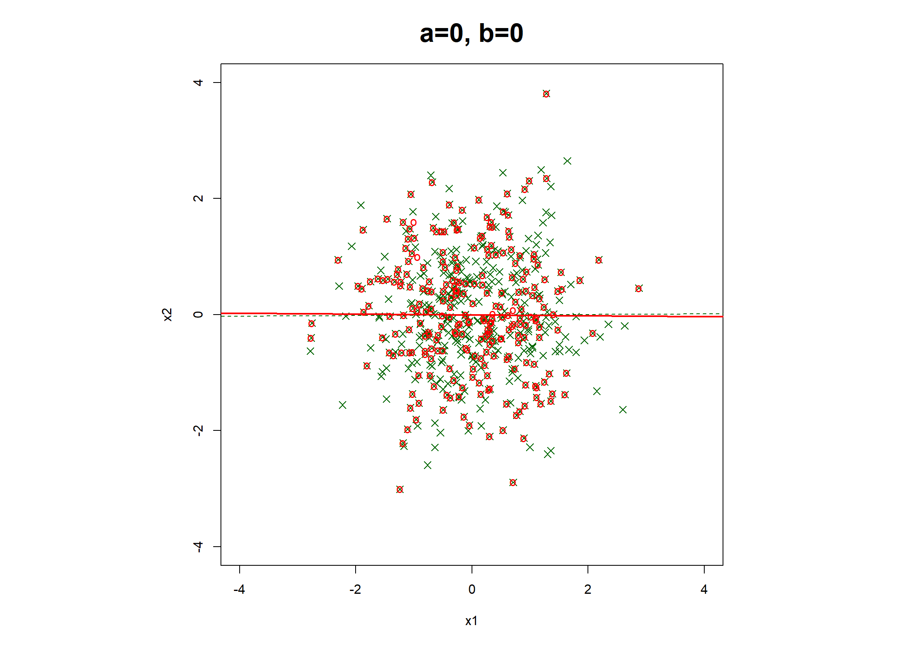
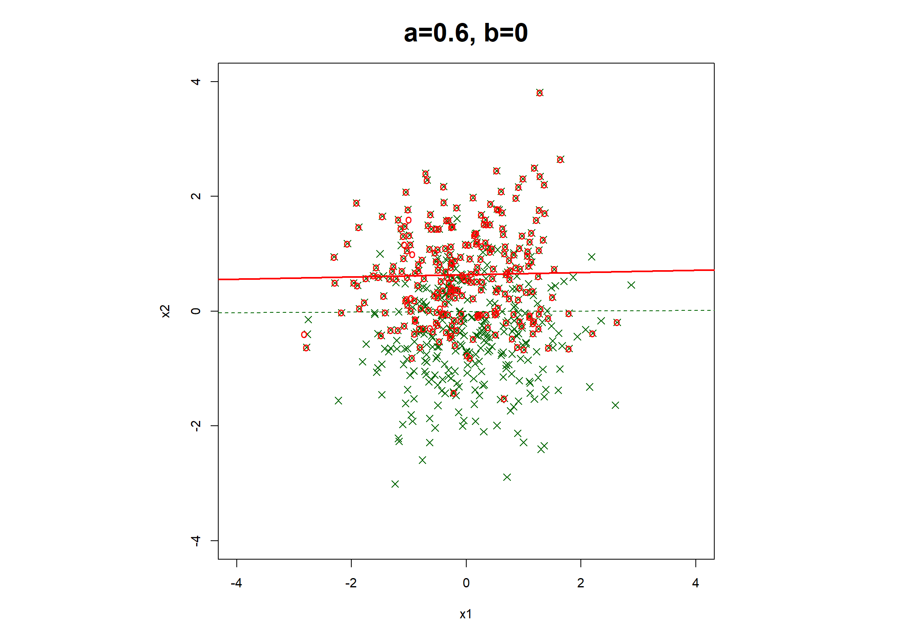
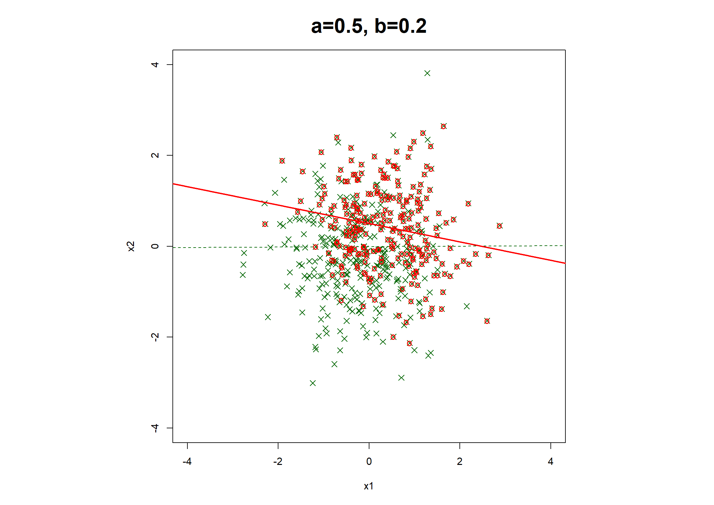

Code show/hide
###################################
# Ewout Steyerberg, Aug 18, 2018 #
# Missing values: illustrate MCAR, MAR, MNAR mechanism
# Use simple linear models
###################################
library(rms) # Harrell's library with many useful functions
#########################
set.seed(1) # For identical results at repetition
n <- 10000 # arbitrary, large, sample size
# n <- 1000000 # used for book
x2 <- rnorm(n = n, mean = 0, sd = 1) # x2 standard normal
x1 <- rnorm(n = n, mean = 0, sd = 1) # Uncorrelated x1
# x1 <- sqrt(.5) * x2 + rnorm(n=n, mean=0, sd=sqrt(1-.5)) # x2 correlated with x1
y1 <- 1 * x1 + 1 * x2 + rnorm(n = n, mean = 0, sd = sqrt(1 - 0)) # generate y
# var of y1 larger with correlated x1 - x2
plot(x = x1, y = x2, pch = ".", xlim = c(-4, 4), ylim = c(-4, 4), ps = .1)
abline(ols(x2 ~ x1))
Code show/hide
# Make approx half missing
# x1: MCAR, MAR and MNAR mechanisms
x1MCAR <- ifelse(runif(n) < .5, x1, NA) # MCAR mechanism for 50% of x1
x1MARx <- ifelse(rnorm(n = n, sd = .8) < x2, x1, NA) # MAR on x2, R2 50%, 50% missing (since mean x2==0)
x1MARy <- ifelse(rnorm(n = n, sd = (sqrt(3) * .8)) > y1, x1, NA) # MAR on y, R2 50%, 50% missing (since mean y1==0)
x1MNAR <- ifelse(rnorm(n = n, sd = .8) < x1, x1, NA) # MNAR on x1, R2 50%, 50% missing (since mean x1==0)
# y1: MCAR, MAR and MNAR mechanisms
yMCAR <- ifelse(runif(n) < .5, y1, NA) # MCAR mechanism for 50% of x1
yMARx2 <- ifelse(rnorm(n = n, sd = .8) < x2, y1, NA) # MAR on x2, R2 39%, 50% missing (since mean x2==0)
yMNAR <- ifelse(rnorm(n = n, sd = .8) < y1, y1, NA) # MNAR on x1, R2 50%, 50% missing (since mean x1==0)
## Correlations ##
cor(is.na(x1MCAR), x2)^2[1] 8.531179e-05Code show/hide
cor(is.na(x1MARx), x2)^2[1] 0.3922284Code show/hide
cor(is.na(x1MARy), y1)^2[1] 0.3905377Code show/hide
cor(is.na(x1MNAR), x1)^2[1] 0.3909611Code show/hide
# y
cor(is.na(yMCAR), y1)^2[1] 1.549048e-08Code show/hide
cor(is.na(yMARx2), x2)^2[1] 0.3924581Code show/hide
cor(is.na(yMNAR), y1)^2[1] 0.5305992Code show/hide
# End check correlations; 0.388 for those with some correlation, 0.52 for yMNAR
### Fig 7.1 ###
### Examine relation between x1 and x2
par(pty = "s")
# MCAR
plot(x = x1[1:500], y = x2[1:500], pch = 4, xlim = c(-4, 4), ylim = c(-4, 4), cex = 1.2, xlab = "x1", ylab = "x2", col = "darkgreen") # Orig
abline(ols(x2 ~ x1), lty = 2, lwd = 2, col = "darkgreen")
points(x = x1MCAR[1:500], y = x2[1:500], pch = "o", col = "red") # MCAR
abline(ols(x2 ~ x1MCAR), lty = 1, lwd = 2, col = "red")
title("a=0, b=0", cex.main = 2)
Code show/hide
# x1MARx
plot(x = x1[1:500], y = x2[1:500], pch = 4, xlim = c(-4, 4), ylim = c(-4, 4), cex = 1.2, xlab = "x1", ylab = "x2", col = "darkgreen") # Orig
abline(ols(x2 ~ x1), lty = 2, col = "darkgreen")
points(x = x1MARx[1:500], y = x2[1:500], pch = "o", col = "red") # MCAR
abline(ols(x2 ~ x1MARx), lty = 1, lwd = 2, col = "red")
title("a=0.6, b=0", cex.main = 2)
Code show/hide
# x1MARy
plot(x = x1[1:500], y = x2[1:500], pch = 4, xlim = c(-4, 4), ylim = c(-4, 4), cex = 1.2, xlab = "x1", ylab = "x2", col = "darkgreen") # Orig
abline(ols(x2 ~ x1), lty = 2, col = "darkgreen")
points(x = x1MARy[1:500], y = x2[1:500], pch = "o", col = "red") # MCAR
abline(ols(x2 ~ x1MARy), lty = 1, lwd = 2, col = "red")
title("a=-0.4, b=-0.1", cex.main = 2) # -.413, -.149
Code show/hide
# x1MNAR
plot(x = x1[1:500], y = x2[1:500], pch = 4, xlim = c(-4, 4), ylim = c(-4, 4), cex = 1.2, xlab = "x1", ylab = "x2", col = "darkgreen") # Orig
abline(ols(x2 ~ x1), lty = 2, col = "darkgreen")
points(x = x1MNAR[1:500], y = x2[1:500], pch = "o", col = "red") # MCAR
abline(ols(x2 ~ x1MNAR), lty = 1, lwd = 2, col = "red")
title("a=0, b=0", cex.main = 2)
Code show/hide
## y ##
# y MCAR
plot(x = x1[1:500], y = x2[1:500], pch = 4, xlim = c(-4, 4), ylim = c(-4, 4), cex = 1.2, xlab = "x1", ylab = "x2", col = "darkgreen") # Orig
abline(ols(x2 ~ x1), lty = 2, col = "darkgreen")
points(x = x1[!is.na(yMCAR)][1:250], y = x2[!is.na(yMCAR)][1:250], pch = "o", col = "red") # yMCAR
abline(ols(x2[!is.na(yMCAR)][1:10000] ~ x1[!is.na(yMCAR)][1:10000]), lty = 1, lwd = 2, col = "red")
title("a=0, b=0", cex.main = 2)
Code show/hide
# y MAR
plot(x = x1[1:500], y = x2[1:500], pch = 4, xlim = c(-4, 4), ylim = c(-4, 4), cex = 1.2, xlab = "x1", ylab = "x2", col = "darkgreen") # Orig
abline(ols(x2 ~ x1), lty = 2, col = "darkgreen")
points(x = x1[!is.na(yMARx2)][1:250], y = x2[!is.na(yMARx2)][1:250], pch = "o", col = "red") # yMCAR
abline(ols(x2[!is.na(yMARx2)][1:10000] ~ x1[!is.na(yMARx2)][1:10000]), lty = 1, lwd = 2, col = "red")
title("a=0.6, b=0", cex.main = 2)
Code show/hide
# y MNAR
plot(x = x1[1:500], y = x2[1:500], pch = 4, xlim = c(-4, 4), ylim = c(-4, 4), cex = 1.2, xlab = "x1", ylab = "x2", col = "darkgreen") # Orig
abline(ols(x2 ~ x1), lty = 2, col = "darkgreen")
points(x = x1[!is.na(yMNAR)][1:250], y = x2[!is.na(yMNAR)][1:250], pch = "o", col = "red") # yMCAR
abline(ols(x2[!is.na(yMNAR)][1:10000] ~ x1[!is.na(yMNAR)][1:10000]), lty = 1, lwd = 2, col = "red")
title("a=0.5, b=0.2", cex.main = 2)
Code show/hide
### End Fig 7.1 ###
## Table 7.1 ##
mean(x1MARy, na.rm = T)[1] -0.3579431Code show/hide
mean(x2[!is.na(x1MARy)], na.rm = T)[1] -0.3703634Code show/hide
mean(x1MNAR, na.rm = T)[1] 0.6202571Code show/hide
# y MNAR
mean(yMNAR, na.rm = T)[1] 1.266413Code show/hide
mean(x1[!is.na(yMNAR)], na.rm = T)[1] 0.4039278Code show/hide
mean(x2[!is.na(yMNAR)], na.rm = T)[1] 0.4216802